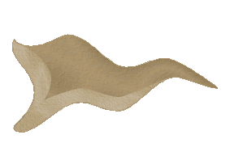
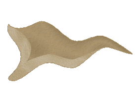

| Übersicht,
Anschläge und Stammtisch (RPG) |
|
Aufbruch in eine neue Zeit (1  ) )
|
| Mars (RIP) |
Ach red Ich weiss noch wie damals Dein Grossvater, vor mir Kniete und bettelte da ich ihn nicht überrenne, das waren noch Zeit ja leider sind wir alt geworden und evtl auch Dinosaurier, dennoch sollte man die Zeiten nicht vergessen, denn diese können schnell wiederkommen!
Wasil wehm Bist du Sympatisch?
ob man dir Sympatisch ist glaube ich Interessiert die Laochen überhaupt net, so denke ich!
Mars
Zur 12. Stunde am 89.Blumenmond im Jahre 421 |
17.08.05 21:59
|
|
| Pechtrabba (RIP) |
Wasil eure wohl gewählten und klingenden Worte sind für manche simple Gemüter doch zu komplex.
Lasst es mich für euch Mars mal einfacher formulieren.
Es gab mal einen Wald in dem viele verschiedene Tiere wohnten. Dann entschieden sich die Stinktiere den Wald zu verlassen und deshalb mag der Wasil nun häufiger in den Wald gehen.
Man sollte schon die etwas verstecken rhetorisch anspruchvollen Hiebe erkennen.. sonst bringen sie ja nichts.
Zusatz : Ich erfülle hier lediglich die Funktion der Übersetzerin. Von den Inhalten distanziere ich mich hier ausdrücklich.
*leise lachend verschwindet*
Pechtrabba,
Hohepriesterin im Dienste des einzig wahren Glaubens an Larja,
Anführerin der glorreichen Nation "Querci"
Zur 18. Stunde am 89.Blumenmond im Jahre 421 |
17.08.05 23:17
|
|
| Mars (RIP) |
Liebe Pechtrabba
Nun habe ich es verstanden, nach euren klaren Worten, nachdem Ihr wegseit von der Eremiteninsel, konnte Wasil (und Pack) endlich in das Laochengebiet rein, ohne Angst zu haben, sich was zu "holen", jedoch sind die Ja dann dennoch weggerannt, die schlimmen Nachwirkungen die Ihr hinterlassen habt haben diese dazu gebracht.
*Ich habe nur eure Übersetzung verstanen mit meinem Kleingeist :-)*
*zieht mit einem schmunzeln von dannen*
-Carnifex
Ja manche können die guten Zeiten niciht vergessen
Mars
Zur 22. Stunde am 89.Blumenmond im Jahre 421 |
18.08.05 0:13
|
|
Faramir
   |
Ach diese Zeit ja, das war eine Zeit des Mittellandbundes usw...
kann ich mich gut erinnern lebte dort auch schon unter dem Bannder der AG also Seite an Seite mit Chrome
Gruesse an AG und Chrome aus vergessen Zeiten und Welten
Sir Faramir
Zur 23. Stunde am 89.Blumenmond im Jahre 421 |
18.08.05 0:32
|
|
| Zeddicus (RIP) |
Chrome? in den alten Büchern ist nichts über einen Sauhaufen der sich so nannte bekannt...wer sollen die gewesen sein? ..nicht mal die Orks und Minotauren die uns Jahrhunderte knechteten haben etwas über diese Bande überliefert...jämmerlich was mancher sich von einem altem Wappen verspricht...
*geht grinsend vom Anschlagsbrett*
Sir Zeddicus,
Kardinal im Dienste des einzig wahren Glaubens an Pheron
Zur 11. Stunde am 90.Blumenmond im Jahre 421 |
18.08.05 3:24
|
|
| Biba Butzemann (RIP) |
is da jemand sauer weil er nicht das bekommt was er will sonder das was er verdient, zeddicus?
Der alte bund der AG und CHROMEs ist viele hundert jahre älter als das was sich die Scherbe nannte. Der Bund war schon ein paar hundert jahre vor der alten zeit fast vergessen, so alt ist dieser bund.
und CHROME bestand wiederum ein paar hundert jahre vor diesem bund und beherrschte die damaligen kontinente Anarien und Venarien. Teils durch krieg erobert teils durch kluge auswahl von Verbündeten die CHROME immer zu Seite standen.
dass so kleingeister wie zeddicus und minotauren und viele andere, die hier als die "Allwissenden" darstellen wollen, keine Kenntnis von solchen geschichtlichen Ereignissen haben ist klar.
Ebenso dass wiederum alte Bekannte wie Wasil aus ihren löchern gekrochen kommen um ein mehr oder minder qualifiziertes Statement abzugeben. Verwunderlich ist eigentlich nur dass die versoffene hafendirne Brendan noch nichts gesagt oder geschrieben hat. wahrscheinlich muss er für die schabracken die sich klapperfahrerinnen nennen putzen, kochen oder wäsche waschen.
naja der alten flachwasser matrose ist halt nicht mehr der flusskahnschiffer der er mal war. eigentlich traurig, doch war es abzusehn.
nunja ich denke am besten man wartet ab und harrt der dinge die da kommen mögen.
Sir Thor von Asgard
Zur 1. Stunde am 1.Erntemond im Jahre 421 |
18.08.05 6:42
|
|
| Murdock (RIP) |
Einen größeren Blödsinn habe ich schon lange nicht mehr gelesen.
"Wir blicken zurück auf eine Zeit des Friedens, des Wohlstands aber auch der Kriege und des Leids."
Ich verstehe Krieg und Leid in Levthans Aussage als negativ. Wie genau passt Eure Nation da jetzt ins Bild? Schon allein Euer Wappen ist eine Provokation und verheißt alles andere als Gutes.
Letztendlich hat sich mal wieder ein Haufen von Taugenichtsen zusammengefunden, der sich auf aberwitzige gemeinsame Wurzeln besinnt und glaubt, wenn man in jedem Satz "CHROME" erwähnt, wird der Anschlag lesenswerter *Thors Zettelchen belustigt mustert*.
So schnell wie Ihr aus den Löchern gekrochen kommt, werdet Ihr auch wieder verschwunden sein... es sei denn König Falster sorgt sich um seine "neue" Nation genauso wie um seine eigene...
*verlässt gelangweilt das Anschlagbrett*
Gandalf
Zur 5. Stunde am 1.Erntemond im Jahre 421 |
18.08.05 7:37
|
|
| Wasil (RIP) |
Ich kann die Aufregung über das Wappen beim besten Willen nicht nachvollziehen.
Wir sehen einen nackten, hohlen Schädel. Einen Schädel mit nichts drin.
Das ist doch mal aussagekräftig und ehrlich!
Wasil
Zur 11. Stunde am 1.Erntemond im Jahre 421 |
18.08.05 8:57
|
|
| Levthan Araxes (RIP) |
Wir sehen ein fettes etwas, das versucht zu fliegen. Einen Schwarzen Hut und eine blaue Brille trägt mit einem S wie... Schwachkopf auf der Brust.
Warum sollte man seine Worte ernst nehmen oder auch nur einen Moment lang beachten. *schmunzelt*
Ach und Gandalf, du bist der Spassvogel deiner Nation oder?
Der Rest deiner Pappkammeraden winselt und fleht darum, Frieden zu schliessen. Also tu uns den Gefallen und kriech zurück zu deinen anderen Memmen.
Markgraf Levthan Araxes,
Vorsteher von Anudôra,
Anführer der glorreichen Nation "CHROME"
Zur 17. Stunde am 1.Erntemond im Jahre 421 |
18.08.05 10:27
|
|
| Wasil (RIP) |
Bei Levthan bewahrheitet sich immer wieder der Spruch:
"Wes Geistes Kind, des Lied ich sing".
Wasil
Zur 19. Stunde am 1.Erntemond im Jahre 421 |
18.08.05 10:55
|
|
| Pechtrabba (RIP) |
Hmm.. also heisst "Crown Hunting Ring of Mighty Evil" soviel wie "Hohlbirnen" Wasil ? Meint ihr dies ?
Fragt sich warum hier ein Name gewählt wurde, den niemand versteht. Da können echt Missverständnisse auftreten und man könnte die Nation als böse einstufen, wie es bereits einige taten.
Man möge ihnen diesen Fehler verzeihen. Seelig sind die, die geistig arm sind, denn sie wissen nicht was sie tun.
Pechtrabba,
Hohepriesterin im Dienste des einzig wahren Glaubens an Larja,
Anführerin der glorreichen Nation "Querci"
Zur 7. Stunde am 2.Erntemond im Jahre 421 |
18.08.05 13:38
|
|
| redsharon (RIP) |
Mich deucht, der "Alte" spricht im Fieber!
"Ach red Ich weiss noch wie damals Dein Grossvater, vor mir Kniete und bettelte da ich ihn nicht überrenne"
Für einen wenige Tage alten Scherbling labert Ihr schon ein gar komisches Zeugs daher. Weder hat einer meiner Vorfahren von einem "Mars" berichtet, den er zu Gesicht bekam, noch hat einer dieser jemals vor einem dahergelaufenen Naseweis die Knie gebeugt ...
Aber offensichtlich neigt Ihr wohl gern zur Selbstüberschätzung ... 6.08.05 18:13 Konflikt Die 2750. Armee hat Mars besiegt! ... Hats weh getan? ((C;
Wasils Wappendeutung hat was ... muss man ehrlich zugeben ... ((C;
Fürst redsharon,
Vorsteher von Steinöd,
Anführer der glorreichen Nation "Sheydanischer Freihandelsbund",
Ehemann der reizenden Black Velvet
Zur 18. Stunde am 2.Erntemond im Jahre 421 |
18.08.05 16:18
|
|
| DeLaCroix (RIP) |
@Gandalf...Letztendlich hat sich mal wieder ein Haufen von Taugenichtsen zusammengefunden, der...
Bitte, muss das sein? Es gibt nur einen Haufen von Taugenichtsen, die diese Bezeichnung auch verdienen...die, von denen Du sprichst sind ein Crownhuntingener Ring von Mighty Evil, was auch immer das heissen mag...
wahrscheinlich war das Wort vor der Bedeutung...hmmm...egal, danke schonmal im Vorraus für spätere Rücksichtnahme.
Sir DeLaCroix,
Anführer der glorreichen Nation "Eukalyptische Taugenichtse",
Tabakkenner der Taugenichtse
Zur 2. Stunde am 3.Erntemond im Jahre 421 |
18.08.05 18:07
|
|
| Mars (RIP) |
Genau^^
Mars
Zur 3. Stunde am 8.Erntemond im Jahre 421 |
19.08.05 21:44
|
|
| Murdock (RIP) |
@DeLaCroix,
bitte verzeiht. Ich wollte damit keineswegs die Eukalyptischen Taugenichtse in ein schlechtes Bild rücken.^^
Ich streiche einfach weiter oben das "Taugenichtse" und ersetze es mit "Möchtegern-Randalierern".
..und @Levthan
Also mir ist nicht bekannt, dass ich der Spaßvogel meiner Nation bin, aber vermutlich ist die Kompetenzregelung bei Euch so verteilt. Das würde den einen oder anderen Anschlag hier erklären^^
Und wer um Himmelswillen winselt darum, Frieden zu schließen? Wir ganz sicher nicht - zumal wir momentan gar keinen Kriegszustand haben. Aber ich vergaß... da war ja noch die "Spaßvogel der Nation" Thematik... *kopfschüttel*
Gandalf
Zur 17. Stunde am 22.Erntemond im Jahre 421 |
23.08.05 7:39
|
|
Übersicht,
Anschläge und Stammtisch (RPG)
|